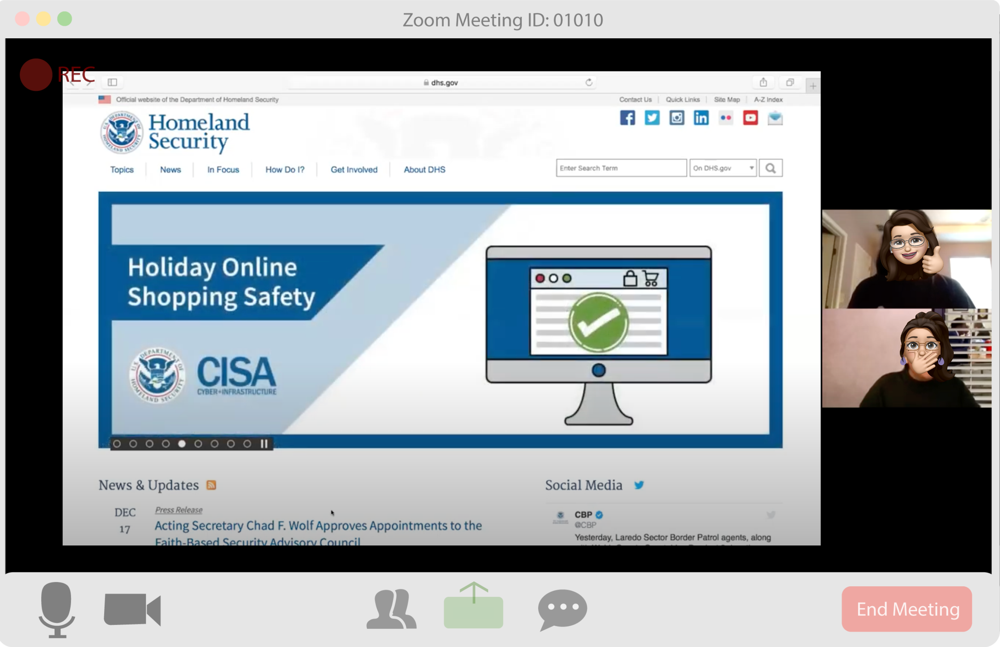
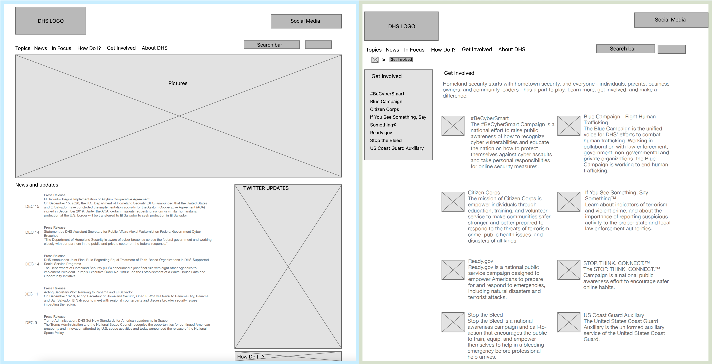
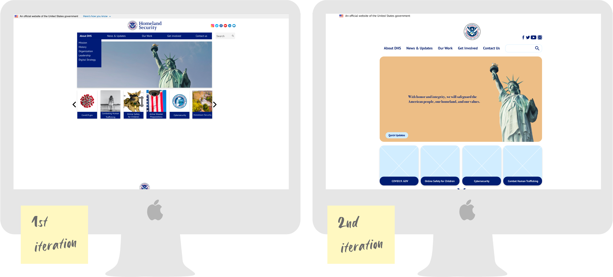
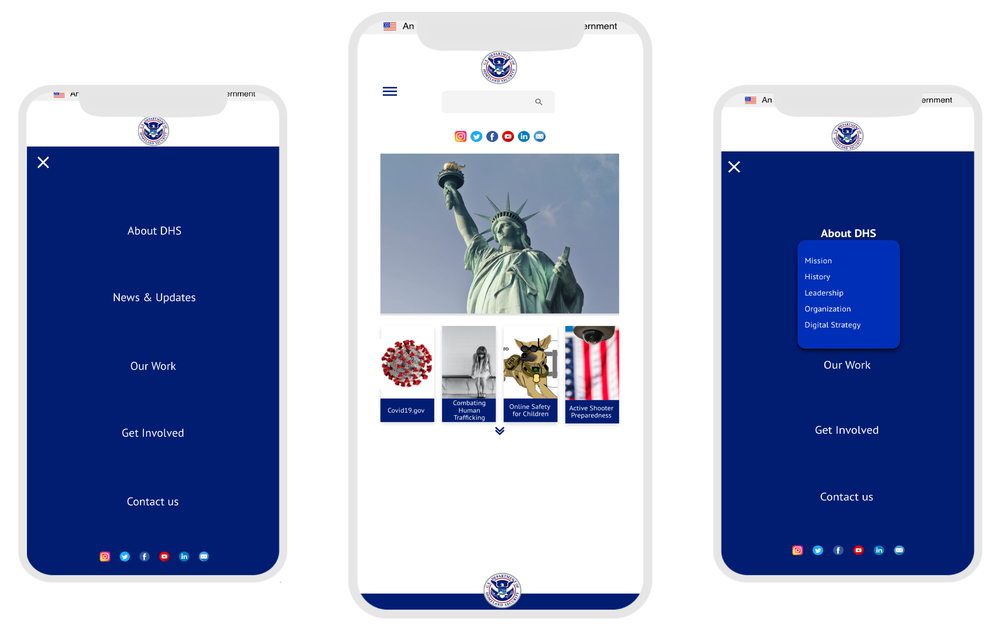
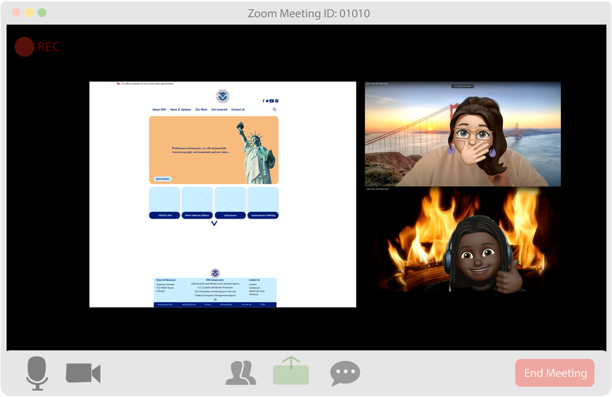
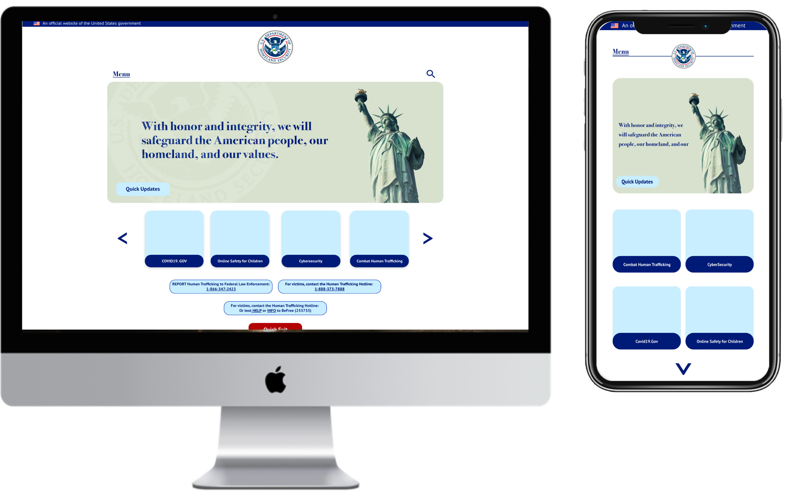

UI Redesign
The Department of Homeland Security works hard to protect the American people, by protect our physical and cyber realms. An entity as massive as DHS should be forgiven for having outdated UI and a disorganized information architecture. With care, I started this UI redesign in order to truly convey the important work DHS does by focusing on simple, professional, and meaningful UI redesign.
Iris Zamarripa
The Department of Homeland Security’s navigation bar is outdated. The hero image and content of the page are difficult to digest.
Create a simple homepage with a familiar design. Navigation menu needs to outline what secondary pages as well.
“I’m was confused by some of the wording and directions. Apart from that it was an easy website to understand” Eve, 22
“I have no input the website is very straight ward” Mary, 29
Breaking down the current DHS website to understand the reasoning behind the current design.
Updates and News is the priority on the homepage.
Copy heavy on both homepage and secondary pages. The entire website is full of information with most of the information presented in copy form.
The navigation bar does not have a drop down menus.
1. The logo will be kept at right position due to the Z-Shaped Pattern design.
2. The wording on the navigation bar will be edited to a modern and recognizable copy. Additionally, different taps will be added to the navigation bar in order to shorten the user path. Create Drop Down Menu.
3. The slide should be redesigned in order to improve the homepage's layout. The slide is central to the DHS homepage. In order to create hierarchy in my re-design, I will focus on emphasizing the navigation bar, logo, and social media.
4. News & Updates will be narrowed down as there is already a News page that can be easily accessed through the navigation bar. News & Updates will not be deleted as professionals probably visit DHS website to verify certain news updates. Social Media/Twitter feed will be deleted.
The first iterations of my design reflect how simple and easily digestible the DHS website can be. The current designs are wordy and disorganized. After research I replaced the news and social media feeds with a “Quick Update” button that informs regular website visitors about the latest news. Secondly, dropdown menus were added to the navigation bar.
 “There’s a lot of white space and the logo doesn’t look centered. Ebi, 25
“I noticed that when you click the menu button, the menu page covers over the search bar.” Jake, 21
UI design last updated on 12/23/2020
